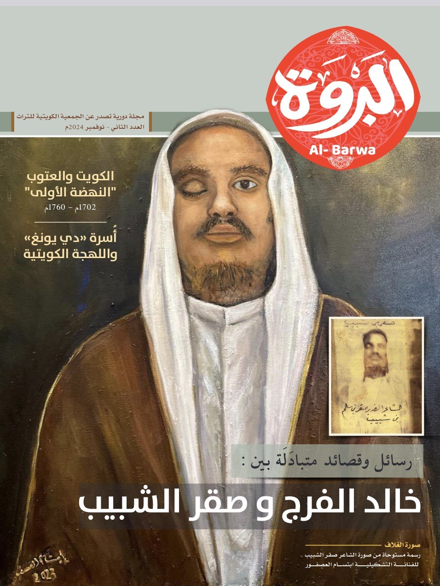
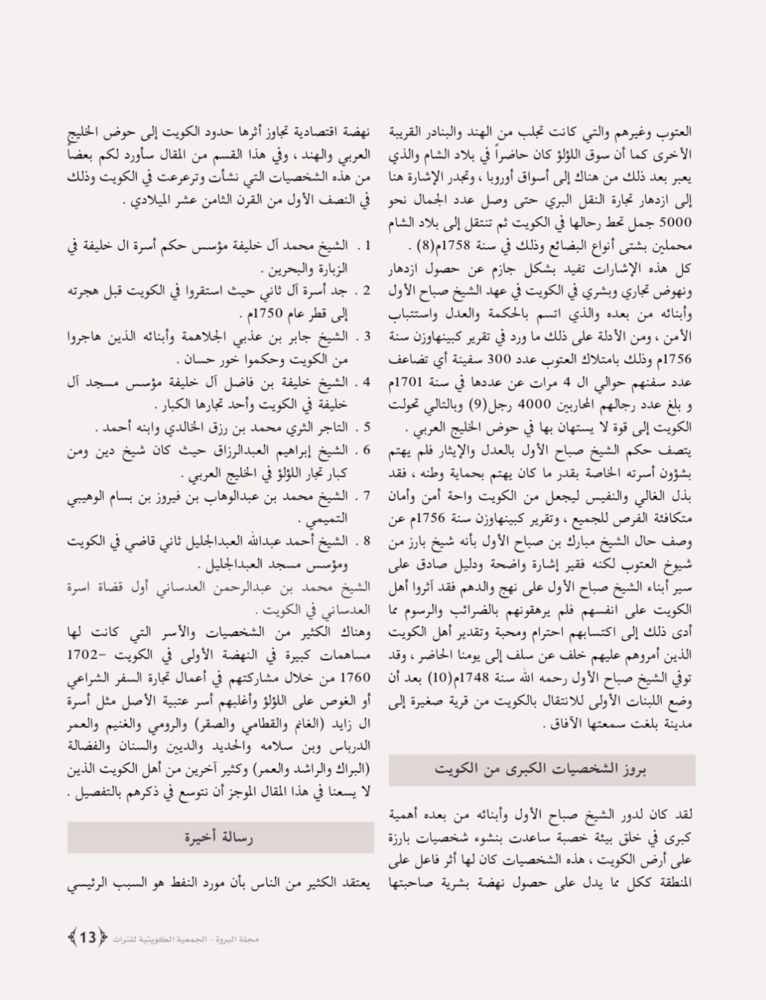
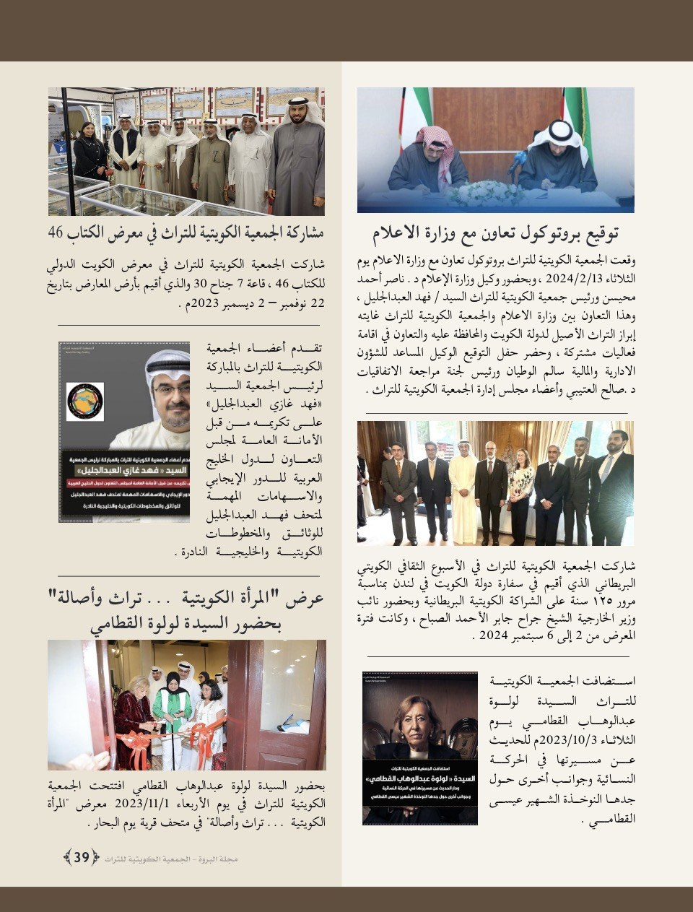

نوفمبر ٢٠٢٤م · صفحات من مجلة البروة، العدد الثاني، نوفمبر ٢٠٢٤م، الجمعية الكويتية للتراث، ص ٣ و١٣ و٣٩
مجلة البروة ٢٠٢٤: القطامي من آل زايد، ولولوة عبدالوهاب القطامي في الجمعية الكويتية للتراث
ما هي
١. الصفحة ١٣، في مقال «الكويت والعتوب: النهضة الأولى ١٧٠٢م إلى ١٧٦٠م»: من الأسر التي شاركت في السفر الشراعي والغوص على اللؤلؤ «وأغلبهم أسر عتبية الأصل مثل أسرة آل زايد (الغانم والقطامي والصقر)». ٢. الصفحة ٣٩: استضافت الجمعية الكويتية للتراث السيدة لولوة عبدالوهاب القطامي يوم الثلاثاء ٣ أكتوبر ٢٠٢٣م للحديث عن مسيرتها في الحركة النسائية وجوانب أخرى حول جدها «النوخذة الشهير عيسى القطامي»، وافتتحت يوم الأربعاء ١ نوفمبر ٢٠٢٣م معرض «المرأة الكويتية... تراث وأصالة» في متحف قرية يوم البحار.
أهميتها
مجلة تراثية تذكر القطامي من آل زايد مع الغانم والصقر، وتوثق حضور لولوة عبدالوهاب القطامي العام عام ٢٠٢٣م.
صور الصفحات




المصادر
مجلة البروة، العدد الثاني، نوفمبر ٢٠٢٤م، الجمعية الكويتية للتراث، المشرف العام فهد غازي العبدالجليل، رئيس التحرير أحمد محمد العدواني، ص ٣ و١٣ و٣٩
كيف كُتب هذا النص: لا يظهر اسم كاتب مقال الصفحة ١٣ في الصفحة المرسلة.
افتح في الموقع التفاعلي